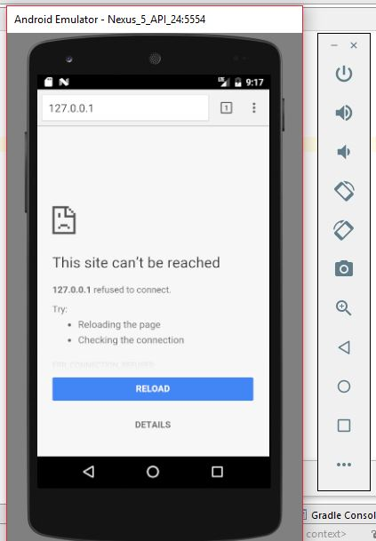

How access WAMP or XAMPP in Android Emulator.
This was the problem I had when I was learning to connect my android app with my localhost, So I thought it worth sharing that how I solved this problem.Anyone who is developing an internet based app need to check his app is working fine or not, for which we use Localhost because each time setting up an online server would be typical as uploading all the scripts then managing it.So, the best way is having a WAMP or XAMPP server running on your PC.
The first question arises in our mind is "What is the big deal it is localhost and my android emulator is running on my PC so I can access that by IP-->127.0.0.1" but no we can not, it doesn't work this way.Your emulator doesn't know what Localhost is, and what this ip 127.0.0.1 pointing to.
So, here is the full step by step process to connect you android app with WAMP or XAMPP more to that this not only applicable to you emulator but to your mobile device also.By this you can develop your app and use it in you local area just by accesing your PC locally.
1.Open Command Prompt and type --> ipconfig.
2.Now copy IPv4 Address, we need that
3.Start your WAMP server.
4.Start your Android Emulator.
5.Now if you have started your android emulator then open a browser and try to aceess your local host by typing "127.0.0.1" in the address bar, then you will get:
Therefore, we can't access by our well known IP for Localhost.Now try the IP which you have copied from Command Prompt.
And we got it.
You can use this IP as server name in your for running them locally on you device or emulator.